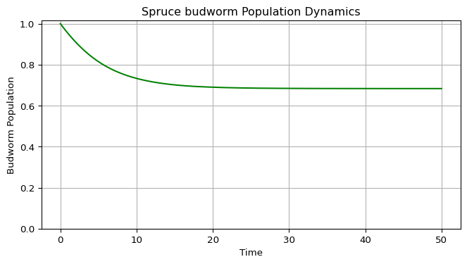

Budworm: Integration and Time Series
Module 1: Low-Dimensional Dynamics
You now integrate the budworm model from Budworm: the Model in Code in time (Strogatz 2024, sec. 3.7; Virtanen et al. 2020).
Implementation: numerical integration
The app on the next page calls this function repeatedly, each time continuing from the last state.
Exercise
Create a function that evolves the system forward in time and appends the result to existing arrays.
- Function name:
evolve_spruce_budworm - Inputs:
t(time array),x(population array),r,k,t_eval(duration to evolve). - Use
solve_ivpwithmethod="RK45", the adaptive step size Runge-Kutta method, starting from the last values of the arrays. - Concatenate the new results with
np.concatenateand clip negative values withnp.clip. - Return the updated
tandx.
def evolve_spruce_budworm(t: np.ndarray, x: np.ndarray, r=0.5, k=10, t_eval=50):
"""Don't forget the docstring and type hints"""
t_span = (t[-1], t[-1] + t_eval)
t_points = # TODO: evaluation points along t_span, use np.linspace
solution = solve_ivp(
fun=spruce_budworm,
t_span=t_span,
y0=[x[-1]],
t_eval=t_points,
args=(r, k),
method="RK45",
)
# TODO: concatenate solution.t and solution.y[0] to t and x
# TODO: ensure non-negative population with np.clip
return t, xargspassesrandkto your ODE function.- The initial condition is
[x[-1]], the last population value, as a list.
Solution
def evolve_spruce_budworm(t, x, r=0.5, k=10, t_eval=50):
"""Evolve the budworm ODE for t_eval time units and append the result."""
t_span = (t[-1], t[-1] + t_eval)
t_points = np.linspace(t[-1], t[-1] + t_eval, 1000)
solution = solve_ivp(spruce_budworm, t_span, [x[-1]], args=(r, k),
t_eval=t_points, method="RK45")
t = np.concatenate((t, solution.t))
x = np.clip(np.concatenate((x, solution.y[0])), 0, None)
return t, xImplementation: time series plot
This plot shows how the population evolves from the initial condition.
Exercise
Create plot_spruce_budworm(t, x) that plots population against time in green, with the y axis starting at 0 (populations cannot be negative), a grid, labels and a title. Return the figure and axes. Figure 1 shows an example.
Solution
def plot_spruce_budworm(t, x):
"""Plot the budworm population against time."""
fig, ax = plt.subplots(figsize=(8, 4))
ax.plot(t, x, color="green")
ax.set_ylim(bottom=0)
ax.set_xlabel("Time")
ax.set_ylabel("Budworm population")
ax.set_title("Spruce budworm population dynamics")
ax.grid()
return fig, axValidation
The trajectory in Figure 1 starts at \(x_0 = 1\), below the threshold \(x = 2\), so it should settle at the refuge \(x^* \approx 0.683\).
print(f"x at t = {t[-1]:.0f}: {x[-1]:.3f}")x at t = 50: 0.683Experiment
Exercise
Once your functions work, explore these questions.
- Multiple equilibria. For \(r = 0.5\) and \(k = 10\), how many equilibria exist? Which are stable?
- Bistability. Start from \(x_0 = 1\) and \(x_0 = 8\). Do they converge to the same equilibrium?
- Outbreak dynamics. Start from a small population, \(x_0 < 2\), with a large carrying capacity, \(k > 10\). Does an outbreak happen?
- Critical slowing down. Start at \(x_0 = 2.01\). How long does the population take to leave the neighbourhood of \(x = 2\)? Compare with the time scale \(1/|f'(2)| \approx 7\) and with the rate of change far from equilibrium.
- Hysteresis. Increase \(k\) slowly from 5 to 15 and back to 5 with \(r = 0.56\). Does the population return along the same path?
- Parameter space. Draw a diagram of the number of equilibria as a function of \(r\) and \(k\). Where do the bifurcations occur?
Solution
- There are four equilibria: \(x = 0\) (unstable), \(x_a \approx 0.68\) (stable), \(x_b = 2\) (unstable) and \(x_c \approx 7.32\) (stable).
- No. \(x_0 = 1\) goes to the refuge \(x_a\) and \(x_0 = 8\) goes to the outbreak level \(x_c\). The unstable point \(x_b = 2\) separates the two basins.
- It depends on how small. For \(r = 0.5\) the threshold \(x_b\) moves down as \(k\) grows: \(x_b \approx 1.79\) for \(k = 12\) and \(x_b \approx 1.63\) for \(k = 15\). So \(x_0 = 1.7\) stays at the refuge for \(k = 12\) but triggers an outbreak for \(k = 15\). A very small population, such as \(x_0 = 1\), still stays at the refuge.
- The population needs about 27 time units to move from 2.01 to 2.5, roughly four times \(1/f'(2) \approx 7\), because it must grow by a factor of 50 at rate \(f'(2) = 0.14\): \(\ln(50)/0.14 \approx 28\). Far from equilibrium, \(|dx/dt|\) is much larger and the population moves in a few time units.
- No. The population jumps up near \(k \approx 9.94\) and only jumps down near \(k \approx 6.45\). Hysteresis shows the loop.
- The number of positive equilibria is three inside a cusp-shaped region of the \((k, r)\) plane and one outside. The two boundary curves are saddle-node bifurcations; Hysteresis plots them with
bifurcation_curvesfromamlab/odes_1d/budworm_analysis.py.
from scipy.integrate import solve_ivp
from amlab.odes_1d.spruce_budworm import spruce_budworm
sol = solve_ivp(spruce_budworm, (0, 100), [2.01], args=(0.5, 10.0),
dense_output=True, rtol=1e-9, atol=1e-12)
t_fine = np.linspace(0, 100, 10001)
t_leave = t_fine[np.argmax(sol.sol(t_fine)[0] > 2.5)]
print(f"time to reach x = 2.5 from x = 2.01: {t_leave:.1f}")
for x0, k in [(1.0, 15.0), (1.7, 12.0), (1.7, 15.0)]:
end = solve_ivp(spruce_budworm, (0, 300), [x0], args=(0.5, k), rtol=1e-9).y[0, -1]
print(f"x0 = {x0}, k = {k}: x(300) = {end:.2f}")time to reach x = 2.5 from x = 2.01: 27.2
x0 = 1.0, k = 15.0: x(300) = 0.73
x0 = 1.7, k = 12.0: x(300) = 0.70
x0 = 1.7, k = 15.0: x(300) = 12.64Interpretation and limitations
Relate every result to the rate plot: the sign of \(dx/dt\) decides the direction of motion. The model has constant parameters, so it cannot produce repeated outbreaks; see Budworm and Forest: Fast and Slow.
Next
References
Strogatz, Steven H. 2024. Nonlinear Dynamics and Chaos: With Applications to Physics, Biology, Chemistry, and Engineering. Chapman; Hall/CRC.
Virtanen, Pauli, Ralf Gommers, Travis E. Oliphant, Matt Haberland, Tyler Reddy, David Cournapeau, Evgeni Burovski, et al. 2020. “SciPy 1.0: Fundamental Algorithms for Scientific Computing in Python.” Nature Methods 17 (3): 261–72. https://doi.org/10.1038/s41592-019-0686-2.